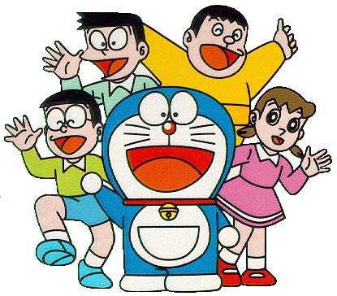

Requirements
Course Requirements
What’s that on the horizon? A lurking presence... Could it be? Yes, it’s a DEADLINE!
In cultural criticism your gut feeling is often mistaken. When you look at these images, you might think...


Assessment
QUIZZES
10%
GROUP PROJECT
15%
DISCUSSION BOARD
15%
2 EXAMS 15% each
30%
FINAL EXAM
30%
Too Cute?
Too Cool?


Too Scary?
Too Happy?
The criteria that we use to make judgements about foreign products are culturally constructed. Learning about Japanese pop culture will make sense of some of what our instincts may at first say is bizarre. So how do we maintain our own cultural identity while trying to understand another? Should we even want to maintain one, singular identity? Is there ever such a thing as one singular identity?
Pop Reading Quizzes 10%
An unspecified number of pop quizzes may be given at anytime throughout the semester on a given week’s readings. Quizzes will be given when only a few students are participating in discussion or when it appears only a few students have completed the reading assignments for the week.
The quiz for which a student has earned their lowest score will be dropped before the pop quiz average is derived and entered into your final grade.
It is entirely possible that there will be no quizzes give during the course (if students are keeping up with the readings and participating in class discussions). In this case, all students will receive full marks for the quiz portion of their final assessment.
Group Project 15%
Groups of no more than 5 will present their research on topics related to but not specifically covered by course materials.
Presentations for JAPNS 121 will generally happen on Thursdays.
For details on projects, see Project Guidelines Handout and Instructions below
Discussion Board 15%
Students are expected to participate in an electronic newsgroup (bulletin board), discussing their thoughts on the readings and class discussions. Topics and the manner of the discussion will be decided by DISCUSSION LEADERS. Each and every student will take a turn being a discussion leader. You will have free rein here to discuss topics that do not get raised in class or in the readings. This is a chance to find out what your classmates think about your ideas. It is also a chance for those who are less talkative in class to recover some points for participation.
A given week's discussion leaders must write and send at least two paragraphs (10 sentences) by FRIDAY at midnight. They should be sure to quote from the following week’s readings and cite the film.
DISCUSSANTS (that is, everyone else) must write at least one response by the following MONDAY, at midnight. Responses may be any length five sentences or over. They can respond to any one or all of the discussion leaders for a given week.
All students must SIGN UP for a week to be a DISCUSSION LEADER by the third week of class.
EXAMS 60%
The two Mid-Terms (15%+15%=30%) and the Final Exam (30%) will follow the same format:
1) identify and provide the significance of 10 key terms, ideas, issues or expressions out of a total of 15 given; 2) write essays answering 2 out of 4 questions given.
Homework:
Do it.
Films
As a portion of your homework each week you are responsible to watch a film or several episodes of a TV show on reserve at the library or available freely over the internet. For your convenience an OPTIONAL screening time for the class has been set for MONDAY EVENINGS 6-9PM. RM 214. PATEE Library. 2nd Floor. Capacity 15. (Questions call (814) 865-3616)
IF YOU OPT NOT TO WATCH THE FILM DURING THE SCREENING TIME, YOU ARE STILL RESPONSIBLE TO WATCH THE FILM ON RESERVE BEFORE TUESDAY’s CLASS.
DVDs are on reserve at the Media Center in the Library.
Readings
You are also responsible for completing the week’s readings prior to class. The instructor reserves the right to give pop quizzes on the readings if students seem not to be keeping up with the assignments.
Most readings will be provided via links from the course website.The following readings are available for purchase at the university bookstore:
Tetsu Kariya and Hanasaki Akira, Oishinbo: Izakaya--Pub Food
ISBN-10: 1421521458
FAUST 1
ISBN-10: 034550206X
Nagaru Tanigawa, The Melancholy of Haruhi Suzumiya
ISBN-10: 0316039012
Edogawa Ranpo, The Edogawa Rampo Reader
ISBN-10: 4902075253
Otsuichi, ZOO
ISBN-10: 1421525879